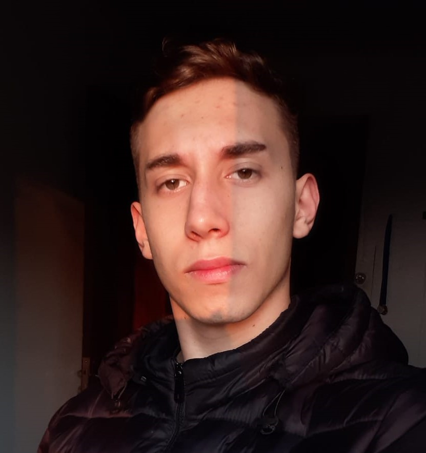

Sobre o Autor

Olá! Sou Thiago Pechniski. Desde pequeno, encontrei nos livros mais do que histórias — encontrei ideias, perguntas e até respostas. Gosto de leitura que provoca, que desafia e que deixa marcas. Neste blog, compartilho resenhas sinceras, reflexões sobre o que leio e dicas para quem também acredita que a literatura transforma. Seja bem-vindo ao meu espaço — um lugar de palavras com propósito.